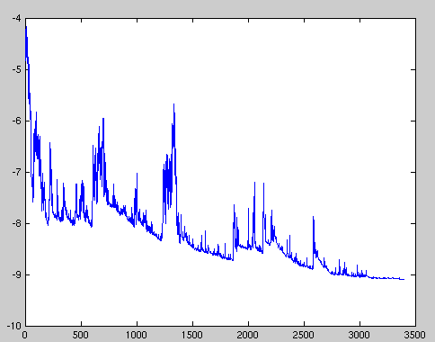

What are Optimization Algorithms ?
Optimization algorithms helps us to minimize (or maximize) an Objective function (another name for Error function) E(x) which is simply a mathematical function dependent on the Model’s internal learnable parameters which are used in computing the target values(Y) from the set of predictors(X) used in the model. For example — we call the Weights(W) and the Bias(b) values of the neural network as its internal learnable parameters which are used in computing the output values and are learned and updated in the direction of optimal solution i.e minimizing the Loss by the network’s training process and also play a major role in the training process of the Neural Network Model . The internal parameters of a Model play a very important role in efficiently and effectively training a Model and produce accurate results. This is why we use various Optimization strategies and algorithms to update and calculate appropriate and optimum values of such model’s parameters which influence our Model’s learning process and the output of a Model.
Gradient Descent
Gradient Descent is the most important technique and the foundation of how we train and optimize Intelligent Systems.
θ=θ−η⋅∇J(θ) — is the formula of the parameter updates, where ‘η’ is the learning rate ,’∇J(θ)’ is the Gradient of Loss function-J(θ) w.r.t parameters-‘θ’.
It is the most popular Optimization algorithms used in optimizing a Neural Network. Now gradient descent is majorly used to do Weights updates in a Neural Network Model , i.e update and tune the Model’s parameters in a direction so that we can minimize the Loss function. Now we all know a Neural Network trains via a famous technique called Backpropagation , in which we first propagate forward calculating the dot product of Inputs signals and their corresponding Weights and then apply a activation function to those sum of products, which transforms the input signal to an output signal and also is important to model complex Non-linear functions and introduces Non-linearities to the Model which enables the Model to learn almost any arbitrary functional mappings.
After this we propagate backwards in the Network carrying Error terms and updating Weights values using Gradient Descent, in which we calculate the gradient of Error(E) function with respect to the Weights (W) or the parameters , and update the parameters (here Weights) in the opposite direction of the Gradient of the Loss function w.r.t to the Model’s parameters.

Variants of Gradient Descent
The traditional Batch Gradient Descent will calculate the gradient of the whole Data set but will perform only one update , hence it can be very slow and hard to control for datasets which are very very large and don’t fit in the Memory. How big or small of an update to do is determined by the Learning Rate -η , and it is guaranteed to converge to the global minimum for convex error surfaces and to a local minimum for non-convex surfaces.Another thing while using Standard batch Gradient descent is that it computes redundant updates for large data sets.
- Stochastic gradient descent
- Mini Batch Gradient Descent
Stochastic Gradient Descent(SGD) on the other hand performs a parameter update for each training example .It is usually much faster technique.It performs one update at a time. θ=θ−η⋅∇J(θ;x(i);y(i)) , where {x(i) ,y(i)} are the training examples. But the problem with SGD is that due to the frequent updates and fluctuations it ultimately complicates the convergence to the exact minimum and will keep overshooting due to the frequent fluctuations .
we can split our training set into smaller sets and implement gradient descent on each batch one after the other. In this way, we can get an intuition of gradient descent before finishing entire training set. It makes the algorithm faster and more efficient. It is called mini batch gradient descent.

In contrast with batch gradient descent where cost function smoothly decays, mini-batch gradient has a little bit noisy cost function but still trend downwards. The reason for the noise is that there are some harder mini batches which cause oscillation to cost function. The most important thing is to select the size of each mini batch. If size is very large (say m) then it will again behave as batch gradient descent (very slow) and if it is very small (say 1) then each example will be a mini batch and it becomes stochastic gradient descent with very large noise. It won’t ever converge and it’ll always just kind of oscillate and wander around the region of the minimum.